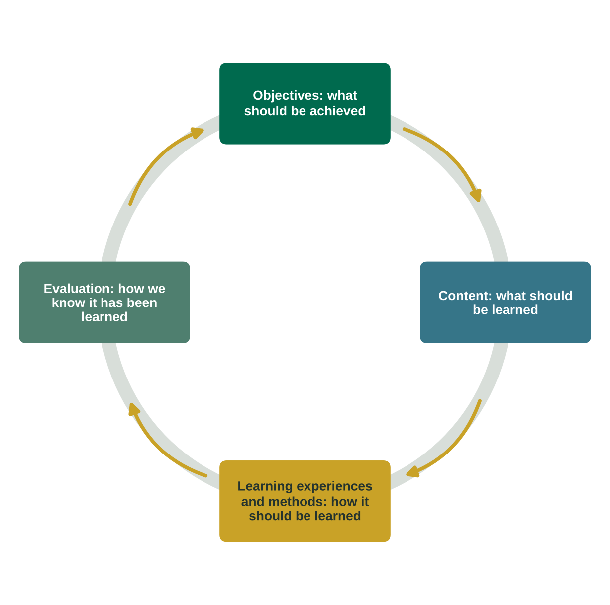
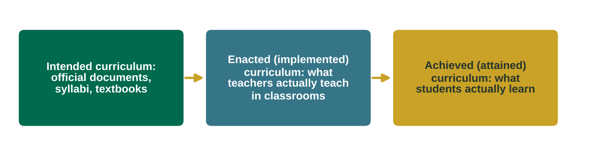
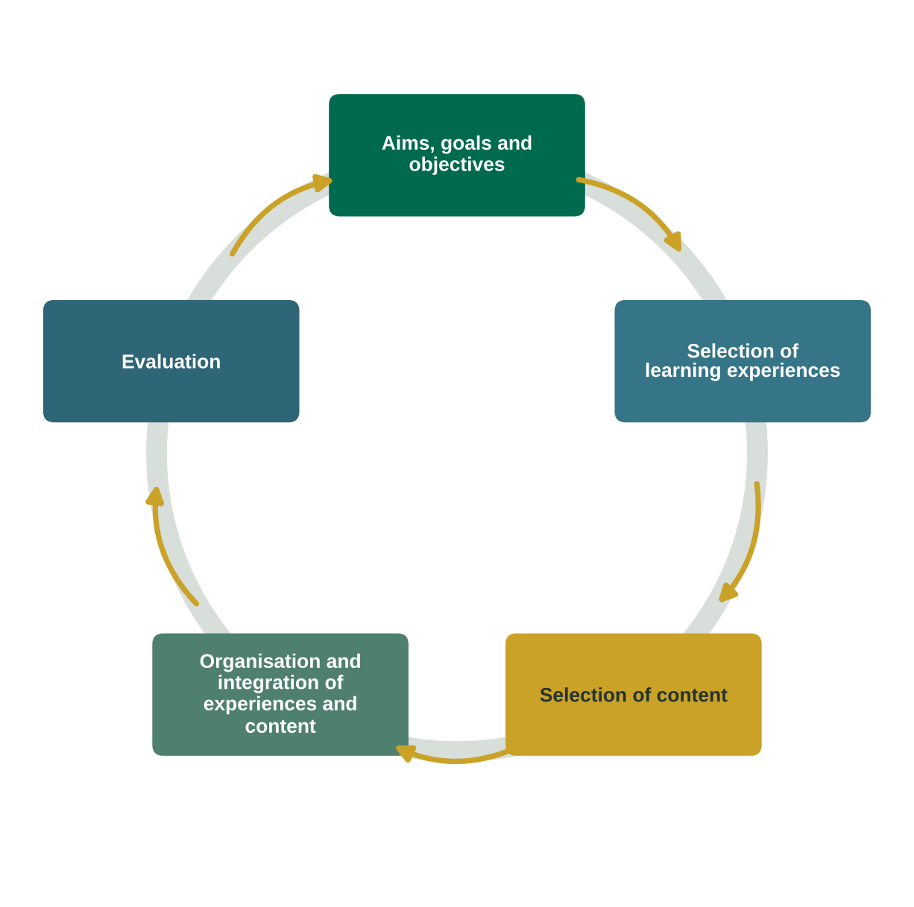
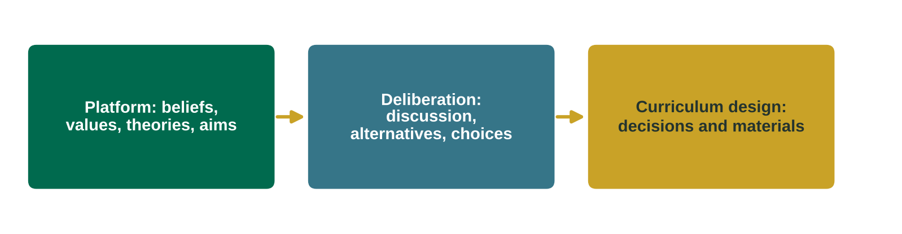
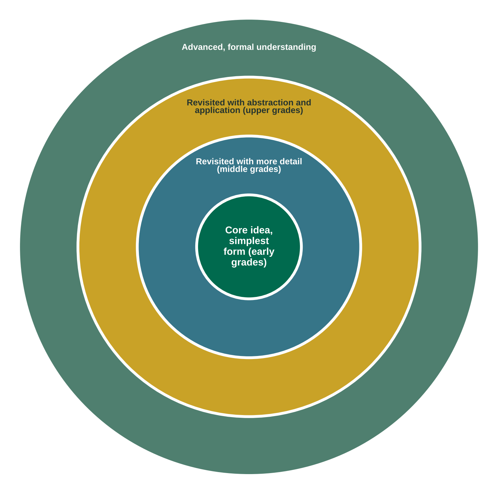

PC 120 Introduction to Curriculum
Concepts, types, foundations, development models and the curricula of Bangladesh
Contents
About this course
The curriculum is the heart of any education system: it answers what should be learned, why, how and how we know it has been learned. This course traces the meaning of curriculum from narrow to broad conceptions; distinguishes intended, enacted and achieved curricula and many curriculum types (centralised, competency-based, integrated, hidden, null); explains the philosophical, psychological, sociological and historical foundations; analyses the major models of curriculum development (Tyler, Taba, Wheeler, Nicholls, Print, Walker, Kerr) and each stage from situational analysis to evaluation; and critically examines the pre-primary, primary and secondary curricula of Bangladesh.
Course objectives
Explain the origin, meaning, nature, scope, components and foundations of curriculum.
Distinguish the types and related concepts of curriculum.
Analyse curriculum development models and each element of the development process.
Critically analyse the pre-primary, primary and secondary curricula of Bangladesh and suggest improvements.
Each unit follows the official syllabus order. Read the narrative first, then the Key point boxes, then test yourself with the Exam focus questions.
Golden boxes = must-remember ideas. Teal boxes = definitions and study tips. Green boxes = Bangladesh context.
The final chapter is a question bank (MCQs with answers, short and broad questions) in the style of university examinations, followed by full references in APA 7th style.
Statistics on enrolment, budgets and policies change every year. Before an exam, check the latest BANBEIS, DPE, UGC and UNESCO figures.
Unit 1: Concept of Curriculum
What the curriculum saysUnit 1: Concept of Curriculum · 7 contact hours
At the end of this unit learners will be able to
- explain the concept, nature, scope and characteristics of curriculum
- differentiate the term curriculum and syllabus
- identify the relationship among the components of curriculum
- explain the different basis of curriculum with example
- Curriculum: Origin, meaning, concept, nature and scope
- Connotation of the term curriculum in historical perspective (narrower to wider)
- Curriculum and Syllabus
- Components and characteristics of curriculum
- Foundation of Curriculum: philosophical, psychological, sociological and historical
1.1 Origin, meaning, concept, nature and scope
Curriculum comes from the Latin verb currere, "to run", and the noun curriculum, a "racecourse" or "running course". By analogy, the curriculum is the course that learners run to reach educational goals.
Definitions illustrate the range of meanings:
"All the learning which is planned and guided by the school, whether it is carried on in groups or individually, inside or outside the school" (Kerr, 1968).
"A plan for learning" (Taba, 1962).
"The reconstruction of knowledge and experience, systematically developed under the auspices of the school, to enable the learner to increase his or her control of knowledge and experience" (Tanner & Tanner, 1980).
"An attempt to communicate the essential principles and features of an educational proposal in such a form that it is open to critical scrutiny and capable of effective translation into practice" (Stenhouse, 1975).
Pinar's (1975) currere: the curriculum as the lived, autobiographical experience of the learner.
Nature: dynamic, goal-oriented, planned, comprehensive, culturally situated, value-laden and subject to continuous revision.
Scope: aims and objectives, content, learning experiences, teaching–learning strategies, materials, assessment, co-curricular activities, the learning environment and, in its broadest sense, all experiences under the school's guidance.
1.2 Connotation of curriculum in historical perspective (narrower to wider)

Figure 1. The widening meaning of curriculum over time
Smith (1996, 2000) distinguishes four approaches: curriculum as body of knowledge (syllabus), as product (objectives; Tyler), as process (interaction; Stenhouse) and as praxis (committed action for emancipation; Grundy, 1987).
1.3 Curriculum and syllabus
| Basis | Curriculum | Syllabus |
|---|---|---|
| Scope | Broad: entire educational programme | Narrow: one subject or course |
| Components | Aims, content, methods, materials, assessment, co-curricular activities | Topics, content outline, time allocation, sometimes assessment |
| Developed by | National bodies (NCTB), institutions | Subject experts, boards, teachers |
| Nature | Prescriptive, philosophical | Descriptive, subject-specific |
| Relationship | Includes the syllabus | Part of the curriculum |
1.4 Components and characteristics of curriculum

Figure 2. The four interrelated components of curriculum (Tyler's elements)
Characteristics of a good curriculum: based on clear aims and the needs of learners and society; relevant and up to date; balanced across domains and subjects; flexible and adaptable to local contexts; inclusive of diverse learners; logically sequenced (continuity, sequence and integration); feasible with available resources; aligned (objectives, content, methods and assessment cohere); and open to evaluation and revision.
1.5 Foundations of curriculum

Figure 3. Foundations of curriculum
Philosophical foundations determine aims and values. Perennialism leads to a Great Books curriculum; essentialism to core subjects; progressivism to experience- and problem-centred curricula; reconstructionism to social-issues curricula; existentialism to choice and the arts (see PC 115).
Psychological foundations guide sequence, method and level: Piaget's stages (concrete before abstract), Bruner's spiral curriculum ("any subject can be taught effectively in some intellectually honest form to any child at any stage of development"; Bruner, 1960), Vygotsky's ZPD, behaviourist objectives, and theories of motivation and multiple intelligences.
Sociological foundations: curriculum must reflect society's needs, culture, values, economy and changes (technology, globalisation, climate change), and promote social cohesion and equity. Questions of "whose knowledge?" (Apple, 1979) matter.
Historical foundations: knowing how curricula evolved (e.g. from colonial to national curricula; the 1976, 1995, 2012 and 2021 reforms in Bangladesh) helps avoid repeating mistakes.
Unit 2: Curriculum and Related Concepts
What the curriculum saysUnit 2: Curriculum and Related Concepts · 5 contact hours
At the end of this unit learners will be able to
- explain the interrelationship among different terminologies of curriculum
- describe different types of curriculum
- identify the role of co-curricular activities for personal development
- Intended, Enacted and Achieved curriculum
- Types of Curriculum:
- Centralized, Semi-centralized and Decentralized curriculum
- Content based curriculum, Learner centered curriculum, Activity based curriculum, Core
- Streaming
- Unified and Diversified curriculum
- Hidden curriculum
- Null curriculum
- Balanced curriculum
- Discipline and Co-relation among discipline
- Cross curricular approach
- Co-curricular activities
2.1 Intended, enacted and achieved curriculum

Figure 4. Three levels of curriculum (IEA; Travers & Westbury, 1989)
Gaps between these levels explain why reforms often fail: well-designed intended curricula can be undermined by teachers' lack of training, large classes or high-stakes examinations, so the achieved curriculum is much narrower. Goodlad (1979) proposed a similar list: ideal, formal, perceived, operational and experiential curricula.
2.2 Types of curriculum
By control
| Type | Features | Example |
|---|---|---|
| Centralised | Developed and controlled by a national authority, uniform | Bangladesh (NCTB), France historically |
| Semi-centralised | National framework with local adaptation | England's National Curriculum with school-based schemes |
| Decentralised | Developed by states, districts or schools | USA (state and district), Finland (local curricula within a national core) |
By organisation and focus
Content (subject)-based curriculum: organised around separate subjects and disciplines; emphasises knowledge; teacher-centred.
Learner-centred curriculum: organised around learners' needs, interests and development (Rousseau, Dewey, Rogers).
Activity-based curriculum: learning through activities, projects and experiences (Kilpatrick).
Core curriculum: a common set of essential subjects or learning required of all students, with electives around it. NEP 2010 specified a common core across general, madrasah and technical streams.
Integrated curriculum: content from different subjects combined around themes, problems or concepts (multidisciplinary → interdisciplinary → transdisciplinary; Drake, 1998).
Competency-based curriculum (CBC): defines competencies (integrated knowledge, skills, attitudes and values) that learners must demonstrate; progression by mastery. Bangladesh's primary curriculum has been competency-based since the 1990s; NCF 2021 extended a competency-based approach to all levels.
Outcome-based curriculum (OBE): begins with clearly defined learning outcomes and designs backward (Spady, 1994); widely used in higher education accreditation (e.g. Washington Accord in engineering; BAC requirements in Bangladesh).
2.3 Streaming
Streaming means dividing learners into separate tracks (e.g. Science, Humanities, Business Studies) usually after Class VIII, based on achievement or choice. Arguments for: specialisation, efficient teaching. Arguments against: early labelling, inequity (lower-income and rural students often end up in less-valued streams), narrow education. NCF 2021 proposed postponing streaming until Class XI; this was one of the most debated reforms.
2.4 Unified and diversified curricula
Unified curriculum: the same curriculum for all learners in a level (e.g. a common primary curriculum).
Diversified curriculum: different curricula or options to meet varied abilities, interests and career goals (e.g. vocational streams, electives).
The Qudrat-e-Khuda Commission (1974) recommended a unified primary and junior secondary education followed by diversification.
2.5 Hidden, null and balanced curriculum
Hidden curriculum: the unwritten, unofficial lessons, values and norms learners acquire through school life, such as obedience, punctuality, competition and gender roles (Jackson, 1968; Apple, 1979). Example: if only boys are asked to lift benches and only girls to decorate, gender stereotypes are taught without being stated.
Null curriculum: what schools do not teach, through omission, which also teaches something (Eisner, 1979). Examples: sexuality education, local indigenous histories, critical media literacy or financial literacy may be absent.
Balanced curriculum: an appropriate balance across domains (cognitive, affective, psychomotor), subjects, theory and practice, local and global, core and elective, and individual and social needs.

Figure 5. Layers of curriculum learners actually experience
2.6 Disciplines and correlation among disciplines
Disciplines are organised bodies of knowledge with their own concepts and methods. Correlation means deliberately relating content across subjects so that learning in one reinforces another (e.g. teaching graphs in Mathematics at the same time as data in Geography). Herbart's followers advocated correlation and concentration (organising subjects around a central core subject).
2.7 Cross-curricular approach
Important themes are taught across several subjects rather than as a single subject: for example environment, gender, ICT, values, disaster risk reduction, health, citizenship and sustainable development. In Bangladesh, cross-cutting issues such as climate change, gender equality and ICT appear across NCTB textbooks.
2.8 Co-curricular activities
Activities that complement the formal curriculum (sports, debates, cultural programmes, scouts, clubs). They develop leadership, teamwork, creativity, physical health and citizenship, and are increasingly integrated into competency-based curricula and assessment.
Unit 3: Curriculum Development Process
What the curriculum saysUnit 3: Curriculum Development Process · 10 contact hours
At the end of this unit learners will be able to
- explain the major elements of curriculum and their interrelationship
- explain the background of curriculum development
- describe the principles of curriculum planning and development
- explain the needs and tasks of situation analysis
- prescribe curriculum development model for Bangladesh on the basis of selected models
- formulate the aims and objectives according to different sources, classification and domains of learning
- select and organize the contents
- explain the development process of instructional materials
- select and organize the instructional strategies
- describe the evaluation and assessment techniques
- discuss the dissemination processes of curriculum
- discuss the implementation process and monitoring techniques
- explain the need for continuous change and development of curriculum
- Major elements of curriculum
- Situational analysis: components of situation and tasks of analysis
- Some selected Models: objective model (Tyler, Hilda Taba), cyclic model (Wheeler, Nicholls &
- Formulation of educational aims and objectives: sources of objectives, classification and domains
- Selection and organization of contents
- Development of instructional materials
- Selection and organization of instructional strategies
- Assessment techniques of student learning
- Curriculum dissemination
- Implementation and monitoring
- Curriculum as a continuous process: need for change, evaluation of curriculum, revision, modification and renewal of curriculum
3.1 Major elements of curriculum
Objectives (aims, goals, competencies, outcomes), content, learning experiences/strategies, materials, and evaluation. Development is the process of planning, implementing and evaluating these elements systematically.
3.2 Situational analysis
Situational analysis is the systematic study of the context in which a curriculum will operate before decisions are made (Skilbeck, 1984; Print, 1993). It ensures relevance and feasibility.
| Component | Factors to analyse |
|---|---|
| Societal and cultural | Values, social change, economy, labour market needs, national policies, SDGs |
| Learners | Age, developmental stage, prior learning, needs, interests, diversity, special needs |
| Teachers | Qualifications, skills, attitudes, workload, numbers |
| Institutions | Facilities, resources, class sizes, management, time |
| Knowledge and disciplines | Developments in subject areas, new knowledge |
| Existing curriculum | Strengths, weaknesses, evaluation results, public examinations |
Tasks of analysis: review documents and research; conduct surveys and needs assessments; consult stakeholders (teachers, parents, employers, experts); compare international curricula; identify gaps; summarise implications for curriculum design.
3.3 Models of curriculum development
Objective (rational / linear) models
*Ralph Tyler (1949), Basic Principles of Curriculum and Instruction.* The "Tyler rationale" asks four questions:
What educational purposes should the school seek to attain? (objectives)
What educational experiences can be provided that are likely to attain these purposes? (learning experiences)
How can these educational experiences be effectively organised? (organisation)
How can we determine whether these purposes are being attained? (evaluation)
Objectives come from three sources (studies of the learners, studies of contemporary life, and suggestions from subject specialists) and are filtered through two screens: the school's philosophy and the psychology of learning.
")
Figure 6. Tyler's model of curriculum development (1949)
*Hilda Taba (1962), Curriculum Development: Theory and Practice. An inductive, grassroots* model: teachers, who know their students, should participate. Seven steps:
Diagnosis of needs
Formulation of objectives
Selection of content
Organisation of content
Selection of learning experiences
Organisation of learning experiences
Determination of what to evaluate and the ways and means of evaluation
Cyclical models
*D. K. Wheeler (1967), Curriculum Process: extended Tyler into a cycle* of five phases, in which evaluation feeds back into objectives: (1) aims, goals and objectives; (2) selection of learning experiences; (3) selection of content; (4) organisation and integration of learning experiences and content; (5) evaluation.

Figure 7. Wheeler's cyclical model (1967)
*Audrey and Howard Nicholls (1978), Developing a Curriculum: A Practical Guide: added situational analysis* as the starting point of the cycle: situational analysis → selection of objectives → selection and organisation of content → selection and organisation of methods → evaluation.
*Murray Print (1993), Curriculum Development and Design: a cyclical model with a curriculum presage* (the forces and people who influence developers: curriculum foundations, developers' conceptions) followed by situational analysis, aims, goals and objectives, content, learning activities and evaluation, with all elements interacting.
Interactive (dynamic / naturalistic) models
Decker Walker (1971), "A naturalistic model for curriculum development": describes how developers actually work. Three phases:
Platform: the beliefs, theories, values and aims developers bring.
Deliberation: discussion and debate to reach agreement on choices, considering alternatives.
Curriculum design: the decisions are recorded in a plan and materials.

Figure 8. Walker's naturalistic model (1971)
*John Kerr (1968), Changing the Curriculum: an interactive model in which four elements (objectives, knowledge (content), learning experiences and evaluation*) are all interconnected so that development can begin with any element, and each influences the others. Kerr also contributed the influential broad definition quoted in 1.1.
| Model | Type | Starting point | Strength | Limitation |
|---|---|---|---|---|
| Tyler | Objective, linear | Objectives | Logical, simple, widely used | Rigid, behaviourist, neglects context |
| Taba | Objective, inductive | Diagnosis of needs | Teacher involvement, needs-based | Time-consuming, still linear |
| Wheeler | Cyclical | Aims | Continuous; evaluation feeds back | Still objective-driven |
| Nicholls | Cyclical | Situational analysis | Context-sensitive | Complex in practice |
| Cyclical | Curriculum presage and situational analysis | Comprehensive, realistic | Complex | |
| Walker | Interactive / naturalistic | Platform of beliefs | Describes real practice, deliberation | Little guidance on evaluation |
| Kerr | Interactive | Any element | Flexible | Lacks clear sequence |
3.4 Formulating aims and objectives
Hierarchy: aims (broad, national) → goals (level- or programme-specific) → objectives (subject, unit, lesson) → learning outcomes.
Sources: society, learners, subject matter, philosophy, national policies and international commitments (SDG 4).
Classification and domains: cognitive, affective and psychomotor (Bloom and colleagues; see PC 117).
Competencies and learning outcomes: competencies integrate knowledge, skills, attitudes and values to perform in real contexts. NCF 2021 defined ten core competencies for Bangladesh, such as communication, critical and creative thinking, problem solving, collaboration, digital literacy and global citizenship, and translated them into subject competencies and learning outcomes by grade.
3.5 Selection and organisation of content
Criteria for selecting content: significance, validity, utility, interest, learnability, feasibility, consistency with social realities and alignment with objectives (Ornstein & Hunkins, 2018).
Principles of organisation:
Scope: the breadth and depth of content.
Sequence: the order (simple to complex, chronological, prerequisite learning, whole to part).
Continuity: vertical repetition of key concepts and skills over time.
Integration: horizontal linking across subjects.
Articulation: vertical and horizontal coherence across grades and subjects.
Balance.
Patterns of organisation include logical (subject structure), psychological (learner readiness), spiral (Bruner: revisiting concepts at increasing levels of complexity), concentric and topical.

Figure 9. Bruner's spiral curriculum: core ideas revisited with increasing depth
3.6 Development of instructional materials
Textbooks, teachers' guides, workbooks, supplementary readers, digital content and assessment materials. Process: plan aligned with curriculum → write → expert review → try out in schools → revise → print and distribute. Quality criteria: accuracy, alignment, readability, inclusive and gender-sensitive representation, attractive design, activities for active learning.
3.7 Selection and organisation of instructional strategies
Strategies should match objectives (e.g. discussion for attitudes, demonstration for skills, inquiry for higher-order thinking), learners and resources. A competency-based curriculum favours experiential, collaborative, project and inquiry-based strategies.
3.8 Assessment of student learning
Assessment must be aligned with objectives and competencies; it should combine formative and summative assessment, use multiple methods, and assess higher-order skills and values as well as knowledge (see PC 117).
3.9 Curriculum dissemination
Dissemination means communicating the new curriculum to teachers, administrators, parents and the public so that they understand and accept it. Strategies: orientation and training (cascade training, which often suffers dilution), teachers' guides, media campaigns, online platforms, pilot schools as demonstration sites, and stakeholder meetings. Havelock (1971) described research–development–diffusion, social interaction and problem-solving models of dissemination.
3.10 Implementation and monitoring
Implementation is putting the curriculum into practice. Fullan (2007) identifies factors affecting implementation: characteristics of the change (need, clarity, complexity, quality), local factors (district, community, principal, teachers) and external factors (government, agencies). The Concerns-Based Adoption Model (CBAM) (Hall & Hord) tracks teachers' stages of concern (from awareness to refocusing) and levels of use.
Monitoring collects ongoing information on implementation (classroom observation, school visits, surveys, learning assessments) to identify problems and provide support.
3.11 Curriculum as a continuous process
Curriculum must change as society, knowledge, technology and learner needs change. Curriculum evaluation judges the worth of the curriculum. Models include Tyler's objectives model, Stufflebeam's CIPP (Context, Input, Process, Product), Stake's countenance model, Scriven's goal-free and formative/summative evaluation, and Kirkpatrick's four levels (for training). Results lead to revision, modification and renewal.

Figure 10. Stufflebeam's CIPP model of curriculum evaluation
Unit 4: Curriculum for Pre-primary and Primary Education of Bangladesh
What the curriculum saysUnit 4: Curriculum for Pre-primary and Primary Education of Bangladesh · 9 contact hours
At the end of this unit learners will be able to
- describe the origin and background of pre-primary and primary curriculum
- explain aims and objectives competency, terminal competencies, subject wise terminal competencies and class wise terminal competencies
- explain the causes of modification and changes of primary curriculum
- identify some special features of modified primary curriculum
- describe the structure of subject curriculum
- explain the teaching-learning methods and techniques in prescribed curriculum
- describe present assessment practice of the primary curriculum
- identify the major strengths and weaknesses of the primary curriculum
- suggest possible ways of overcoming the weaknesses and their further development
- Background: pre-primary and primary curriculum
- Main features of present pre-primary curriculum
- Main features of present primary curriculum
- Critical analysis of the curriculum: identification of strengths and weaknesses, possible solutions
- Suggestions for overcoming weaknesses and further improvement
4.1 Background
Primary curriculum: after independence, a new primary curriculum was developed by the National Curriculum and Syllabus Committee (1976–77). In 1986–1991, a new competency-based primary curriculum was developed under the IDA/UNICEF-supported projects (introduced in schools from 1992), with 53 terminal competencies. It was revised in 2002 (50 terminal competencies) and again in 2011–2012 (29 terminal competencies; subject-wise and class-wise learning outcomes; new textbooks from 2013).
Pre-primary curriculum: NEP 2010 introduced one year of pre-primary education for 5-year-olds; the Pre-primary Curriculum was developed (2011) with learning areas and a play-based approach, and expanded under the Operational Framework for Pre-primary Education (2008) and PEDP3.
NCF 2021: a single framework from pre-primary to Class XII with ten core competencies; two years of pre-primary; new primary textbooks rolled out from 2023 in Class I and later grades.
4.2 Main features of the present pre-primary curriculum
Play-based, child-centred, activity-oriented learning; no formal textbooks for children; materials include a learning kit, picture books, rhymes and a teachers' guide.
Learning areas: physical and motor; social and emotional; language and communication; early mathematics; environment and science; creative arts; health, hygiene and safety.
Daily routine with free play, circle time, storytelling, songs, drawing and outdoor play.
Assessment through observation and portfolios, not written tests.
Emphasis on school readiness and smooth transition to Class I.
4.3 Main features of the present primary curriculum
Competency-based, with terminal competencies, subject-wise terminal competencies, class-wise expected learning outcomes and lesson-level objectives.
Subjects: Bangla, English, Mathematics, Bangladesh and Global Studies (from Class III), Primary Science (from Class III), Religion and Moral Education (from Class III), Physical Education, Music, Arts and Crafts.
Activity-based, joyful learning and multiple ways of teaching and learning.
Free textbooks and teachers' guides.
Continuous assessment with term tests; the PECE terminal examination (2009–2019) was discontinued.
Cross-cutting issues: environment, gender, disaster risk reduction, health, values and the spirit of the Liberation War.
Ethnic language pre-primary and early-grade materials (since 2017).
NCF 2021: emphasis on experiential learning, well-being, and formative assessment; no examinations in Classes I–III.
4.4 Critical analysis: strengths, weaknesses and solutions
| Strengths | Weaknesses | Possible solutions |
|---|---|---|
| Clear competency framework | Gap between intended and achieved curriculum: NSA results show low competency attainment in Bangla and Mathematics | Structured pedagogy, early-grade reading and numeracy programmes, remedial teaching |
| Free textbooks to all | Textbook errors and overloaded content in some editions | Rigorous review, try-out, reduced content |
| Child-centred, activity-based principles | Large classes, double shifts and short contact hours limit activities | Single shift, more classrooms and teachers |
| Inclusive features (ethnic languages, gender sensitivity) | Teacher shortages for ethnic languages; limited inclusive education support | Recruit and train mother-tongue teachers; inclusive education resource teachers |
| Continuous assessment in principle | Examination and guidebook culture; coaching | Train teachers in formative assessment; regulate guidebooks |
| Teacher training via DPEd | Weak in-service follow-up and supervision | School-based CPD, mentoring, cluster training |
4.5 Suggestions for improvement
Strengthen foundational learning; reduce curriculum load; better teacher preparation and support; adequate resources and smaller classes; regular evidence-based review with piloting; involve teachers and communities in curriculum development; align assessment with competencies; expand ICT-supported learning with attention to equity.
Unit 5: Curriculum for Secondary Education
What the curriculum saysUnit 5: Curriculum for Secondary Education · 9 contact hours
At the end of this unit learners will be able to
- describe the origin and background of secondary curriculum
- explain aims and objectives of secondary curriculum
- explain different terms of secondary curriculum
- explain the causes of modification and changes of secondary curriculum
- identify some special features of modified secondary curriculum
- describe the structure of subject curriculum
- explain the teaching-learning methods and techniques in curriculum
- identity instructional materials of curriculum
- describe present assessment practice of the secondary curriculum
- identify the major strengths and weaknesses of secondary curriculum
- suggest possible ways of overcoming the weaknesses and their further development
- Background of secondary curriculum
- Main features of secondary curriculum
- Critical analysis of the curriculum: identification of strengths and weaknesses
- Suggestions for overcoming weakness and further improvement
5.1 Background of the secondary curriculum
1976: first national secondary curriculum after independence (based on the Qudrat-e-Khuda Commission's recommendations).
1995–96: revised secondary curriculum.
2012: new curriculum for Classes VI–XII aligned with NEP 2010; learning outcome–based; creative questions (introduced in 2008 for SSC); new textbooks from 2013; Science, Humanities and Business streams from Class IX.
NCF 2021: competency-based, experiential learning from Class VI to XII; ten subjects common to all until Class X (no streaming); 60–70% continuous, school-based assessment; rolled out in Classes VI and VII in 2023, VIII and IX in 2024.
2024–25 reversal: after the political transition, the government announced a return to a revised version of the 2012 curriculum for secondary classes from 2025 (with streaming reintroduced from Class IX), while planning a new reform with wider consultation.
Because of these rapid changes, examiners are likely to ask you to compare the 2012 and NCF 2021 approaches and to evaluate why the 2021 reform faced resistance. Prepare a balanced answer.
5.2 Main features
| Feature | 2012 curriculum | NCF 2021 curriculum |
|---|---|---|
| Orientation | Learning outcomes; content-focused | Competency-based; experiential learning |
| Streaming | From Class IX (Science, Humanities, Business) | None until Class X (proposed from Class XI) |
| Subjects | Many subjects, heavy content | Ten common subjects (e.g. Bangla, English, Mathematics, Science, History and Social Science, Digital Technology, Life and Livelihood, Wellbeing, Religion, Arts and Culture) |
| Teaching | Lecture-dominant in practice | Projects, inquiry, group work, field work |
| Assessment | Term examinations, creative questions, SSC/HSC public examinations | Large share of continuous school-based assessment, performance indicators, reduced public examinations |
| Role of textbooks | Central | Activity books and experience-based materials |
5.3 Present assessment practice
Under the 2012-based system: class tests, term (half-yearly and annual) examinations, SBA components, creative questions and MCQs; public examinations at SSC and HSC with GPA. Under NCF 2021: continuous formative assessment with performance indicators recorded in apps (e.g. "Noipunno"), summative assessment through tasks and projects, and descriptive reports rather than marks. The latter faced criticism over teacher workload, unclear indicators, parental anxiety about the loss of marks and examinations, and resource demands.
5.4 Critical analysis: strengths and weaknesses
Strengths (across reforms): recognition of higher-order skills; attempts to reduce rote learning; free textbooks; inclusion of ICT and life skills; cross-cutting issues (environment, gender, values); NCF 2021's focus on wellbeing and experiential learning.
Weaknesses:
Frequent, rapid reforms without adequate piloting or consultation.
Insufficient teacher preparation (short cascade training).
Large classes, poor resources and limited laboratories.
Assessment misalignment and the dominance of public examinations and guidebooks.
Persistent urban–rural and public–private gaps.
Textbook quality issues and content controversies.
Weak monitoring and use of evaluation evidence.
5.5 Suggestions for improvement
Establish a stable, evidence-based reform process with a permanent curriculum commission and long-term vision.
Pilot new curricula in representative schools and evaluate before scaling up.
Invest heavily in teacher professional development, with school-based support.
Align public examinations with curriculum competencies; strengthen the reliability of school-based assessment through moderation.
Reduce class sizes and improve facilities.
Engage parents and communities in understanding reforms.
Ensure quality textbooks through rigorous review.
Use technology to support, not replace, teacher–student interaction.
Reading List
Recommended in the curriculum
Books, journals and reports listed in the official course curriculum, as given there.
- Allam, C. Ornstein, Francis P. Hunkins (2017), Curriculum: Foundations, Principles and Issues, 7th edition. Pearson Education, Inc.
- Armstrong David, G. (1989), Developing and Documenting the Curriculum, Allyn and Bacon.
- Ehsan, Md Abul (১৯৯৭), Curriculum Development Policy and Methodology (in Bangla: শিক্ষাক্রম উন্নয়ন: নীতি ও পদ্ধতি), Dhaka: Sattrabondu Library.
- Euring, Robyn, (2013), Curriculum and Assessmen 2nd edition, Oxford University Press.
- Kelly, A. V. (1977), The Curriculum: Theory and Practice, New York: Harper and Row Publishers.
- Lewy, A. (1977), Planning the School Curriculum, Paris: UNESCO.
- Lewy, Arich (1977), Handbooks of Curriculum Evaluation. UNESCO.
- Marsh, C. J. Key (1992), Concepts for Understanding Curriculum. London: The Falmer Press.
- Motaher Hossain, M. & Khatun, J,A(2021) Learning theory and Social Constructivism, Mymensingh: Razia-Mofiz Foundation.
- NCTB (2021) National Curriculum Framework 2021, National Curriculum and TextBook, Dhaka.
- NCTB (1974, 1988,1997, 2011, 2012 and 2021) National Curriculum at Primary, Secondary and higher secondary level, National Curriculum and Textbook , Dhaka.
- Ohab Mia, M.A. (২০০৪), Curriculum Development and Evaluation (in Bangla: শিক্ষাক্রম প্রণয়ন ও মূল্যায়ন), Dhaka: Bangla Academy.
- Oliva, P. F (2002), Developingthe curriculum (5th ed.). New York: AdisonWesley.
- Posner, G. J and Rudnitsky A.N (1986), Course Design: A Guide to Curriculum Development for Teachers, New York: Longman.
- Pratt, David, (1980), Curriculum: Design and Development, Harcourt Brace Jovanovice.
- Seguin, R. (1991). Curriculum Development and Implementation of Teaching Programmes: Methodology Guided, Paris: UNESCO.
- Seguin, R. (1991), Curriculum Development and Implementation and Teaching Programmes, UNESCO, ED/WS-17.
- Rahman, Siddiqur (1987), Curriculum Process, Dhaka: Bishaw Parichaya.
- Taba. H. (1972), Curriculum Development: Theory and Practice.
- Tyler, R. W. (1949), Basic Principles of Curriculum and Instruction, Chicago.
Widely read books worldwide on this subject
Well-known international texts that go well with this course.
- Tyler, R. W. (1949). Basic Principles of Curriculum and Instruction. University of Chicago Press.
- Taba, H. (1962). Curriculum Development: Theory and Practice. Harcourt, Brace & World.
- Ornstein, A. C., & Hunkins, F. P. (2017). Curriculum: Foundations, Principles, and Issues (7th ed.). Pearson.
- Stenhouse, L. (1975). An Introduction to Curriculum Research and Development. Heinemann.
- Wiggins, G., & McTighe, J. (2005). Understanding by Design (2nd ed.). ASCD.
- Kelly, A. V. (2009). The Curriculum: Theory and Practice (6th ed.). Sage.
- Pinar, W. F., Reynolds, W. M., Slattery, P., & Taubman, P. M. (1995). Understanding Curriculum. Peter Lang.
Exam Preparation Bank
A. Multiple-choice questions
1. The word curriculum comes from the Latin "currere", meaning:
(a) to learn (b) to run (c) to teach (d) to grow
Show answer
Answer: (b)
2. "All the learning which is planned and guided by the school" was defined by:
(a) Tyler (b) Kerr (c) Taba (d) Stenhouse
Show answer
Answer: (b)
3. The curriculum as "process" approach is associated with:
(a) Tyler (b) Stenhouse (c) Bobbitt (d) Bloom
Show answer
Answer: (b)
4. What teachers actually teach in classrooms is the:
(a) intended curriculum (b) enacted curriculum (c) achieved curriculum (d) null curriculum
Show answer
Answer: (b)
5. The concept of "null curriculum" was proposed by:
(a) Jackson (b) Eisner (c) Apple (d) Pinar
Show answer
Answer: (b)
6. The term "hidden curriculum" was first used by:
(a) Jackson (b) Illich (c) Freire (d) Dewey
Show answer
Answer: (a)
7. Tyler's model asks how many fundamental questions?
(a) 3 (b) 4 (c) 5 (d) 7
Show answer
Answer: (b)
8. The grassroots, inductive model with seven steps is by:
(a) Tyler (b) Taba (c) Wheeler (d) Kerr
Show answer
Answer: (b)
9. Situational analysis was added to the cyclical model by:
(a) Wheeler (b) Nicholls and Nicholls (c) Walker (d) Tyler
Show answer
Answer: (b)
10. Platform, deliberation and design are the phases of the model of:
(a) Walker (b) Kerr (c) Print (d) Skilbeck
Show answer
Answer: (a)
11. Spiral curriculum was proposed by:
(a) Piaget (b) Bruner (c) Vygotsky (d) Ausubel
Show answer
Answer: (b)
12. CIPP evaluation model was developed by:
(a) Stake (b) Stufflebeam (c) Scriven (d) Kirkpatrick
Show answer
Answer: (b)
13. The competency-based primary curriculum of Bangladesh was first introduced in schools around:
(a) 1976 (b) 1992 (c) 2002 (d) 2013
Show answer
Answer: (b)
14. How many core competencies did NCF 2021 define?
(a) 5 (b) 8 (c) 10 (d) 12
Show answer
Answer: (c)
15. CBAM is a model of:
(a) curriculum design (b) curriculum implementation (c) curriculum evaluation (d) content selection
Show answer
Answer: (b)
16. Vertical repetition of key concepts across grades is called:
(a) scope (b) continuity (c) integration (d) balance
Show answer
Answer: (b)
B. Short-answer questions
Q1. Distinguish between curriculum and syllabus.
Q2. What are the foundations of curriculum?
Q3. Distinguish between intended, enacted and achieved curriculum.
Q4. Explain the hidden and null curriculum with examples from Bangladesh.
Q5. What is a competency-based curriculum?
Q6. What is situational analysis? Name its components.
Q7. State the four questions of the Tyler rationale.
Q8. What is curriculum dissemination?
C. Broad questions
Q9. Trace the changing connotation of curriculum from narrow to broad, and discuss its components and characteristics.
Q10. Discuss the philosophical, psychological and sociological foundations of curriculum.
Q11. Compare objective, cyclical and interactive models of curriculum development.
Q12. Describe the steps of the curriculum development process from situational analysis to evaluation.
Q13. Critically analyse the primary curriculum of Bangladesh and suggest improvements.
Q14. Compare the 2012 secondary curriculum with NCF 2021, and evaluate the challenges of curriculum reform in Bangladesh.
References
Apple, M. W. (1979). Ideology and curriculum. Routledge & Kegan Paul.
Bruner, J. S. (1960). The process of education. Harvard University Press.
Drake, S. M. (1998). Creating integrated curriculum. Corwin.
Eisner, E. W. (1979). The educational imagination. Macmillan.
Fullan, M. (2007). The new meaning of educational change (4th ed.). Teachers College Press.
Goodlad, J. I. (1979). Curriculum inquiry: The study of curriculum practice. McGraw-Hill.
Grundy, S. (1987). Curriculum: Product or praxis? Falmer Press.
Hall, G. E., & Hord, S. M. (2015). Implementing change: Patterns, principles, and potholes (4th ed.). Pearson.
Jackson, P. W. (1968). Life in classrooms. Holt, Rinehart & Winston.
Kelly, A. V. (2009). The curriculum: Theory and practice (6th ed.). Sage.
Kerr, J. F. (Ed.). (1968). Changing the curriculum. University of London Press.
Marsh, C. J. (2009). Key concepts for understanding curriculum (4th ed.). Routledge.
NCTB. (2012). National curriculum 2012. National Curriculum and Textbook Board.
NCTB. (2021). National curriculum framework 2021. National Curriculum and Textbook Board.
Nicholls, A., & Nicholls, S. H. (1978). Developing a curriculum: A practical guide (2nd ed.). George Allen & Unwin.
Ornstein, A. C., & Hunkins, F. P. (2018). Curriculum: Foundations, principles, and issues (7th ed.). Pearson.
Pinar, W. F. (Ed.). (1975). Curriculum theorizing: The reconceptualists. McCutchan.
Print, M. (1993). Curriculum development and design (2nd ed.). Allen & Unwin.
Skilbeck, M. (1984). School-based curriculum development. Harper & Row.
Spady, W. G. (1994). Outcome-based education: Critical issues and answers. AASA.
Stenhouse, L. (1975). An introduction to curriculum research and development. Heinemann.
Stufflebeam, D. L. (1971). Educational evaluation and decision making. Peacock.
Taba, H. (1962). Curriculum development: Theory and practice. Harcourt Brace & World.
Tanner, D., & Tanner, L. N. (1980). Curriculum development: Theory into practice (2nd ed.). Macmillan.
Travers, K. J., & Westbury, I. (1989). The IEA study of mathematics I: Analysis of mathematics curricula. Pergamon.
Tyler, R. W. (1949). Basic principles of curriculum and instruction. University of Chicago Press.
Walker, D. F. (1971). A naturalistic model for curriculum development. The School Review, 80(1), 51–65.
Wheeler, D. K. (1967). Curriculum process. University of London Press.